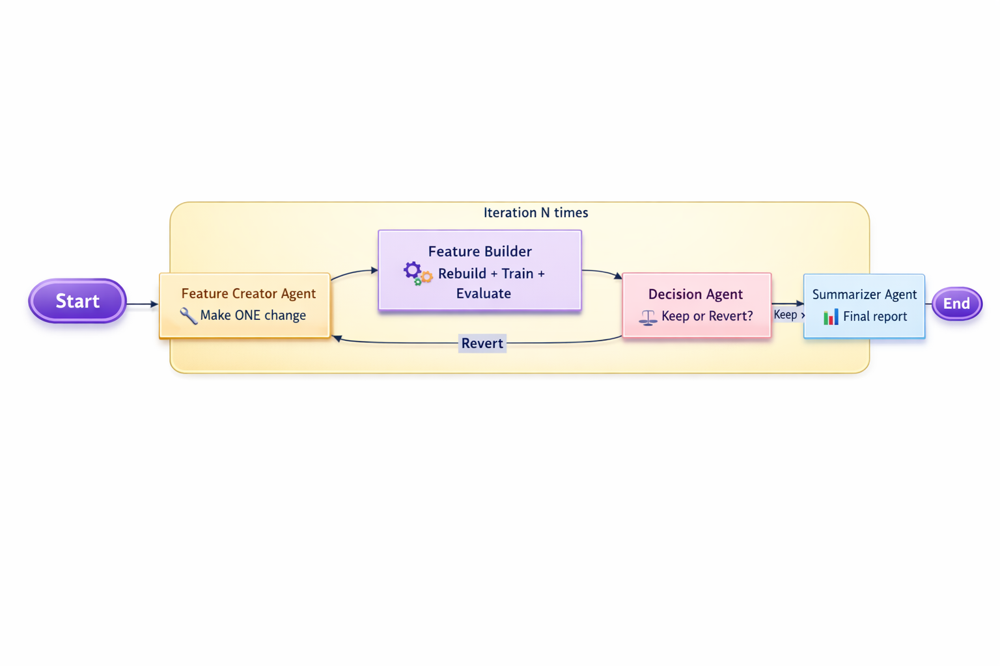

What Do UFC Fighting, ML, and Agentic Loops Have in Common?
March 1, 2026
To the astute observer, you already see where this is going.
I've been building a machine learning-based UFC prediction engine for a while now. At some point I had a slightly curious idea:
What happens if I plug a self-improving agentic loop into the system? Can it improve the model with nothing but an initial goal?
No hand-holding. No human-in-the-loop nudging. Just: "Here's the objective. Improve it."
That question turned into a full architecture experiment.
TL;DR here is the codeThe Stack (And Why It's Not the Interesting Part)
The core ML stack is standard: Python, XGBoost, structured datasets, held-out evaluation. Nothing exotic.
The interesting part is orchestration.
Specifically:
- Do you actually need LangGraph, Crew, or Claude Skills to build serious multi-agent systems?
- What if you're paying for Claude Code, but not unlimited inference?
- How do you maximize autonomy without blowing your budget?
For me, the answer was surprisingly simple:
Use the Claude CLI in non-interactive mode and treat agents as short-lived executors.
cmd = [
self.cfg.agent_command, # path to claude code cli
"--print", # non-interactive mode
"--output-format", "json",
"--dangerously-skip-permissions", # skips interactive confirmations
"--model", self.cfg.agent_model,
](There's also a --permission-mode acceptEdits variant I use in some runs so it can write files like plan.json or change.json without stopping to ask "are you sure?" every time.)
And honestly… that's pretty much the whole trick.
No sprawling orchestration framework to learn and debug. No long-lived agent processes chewing up RAM. No fragile in-memory conversation graph trying to keep track of who said what three hours earlier.
Just a clean handoff: one carefully crafted prompt finishes, drops its output into a file (a plan.json, a change.json, whatever), the next prompt picks up exactly where it left off by reading that file, and the chain keeps moving forward.
It's almost stupidly straightforward. But once the prompts are tuned right, it turns out to be incredibly cheap to run, completely inspectable (every step leaves a paper trail on disk), and way more reliable than most of the fancier setups I tried.
The Core Pattern: Plan → Implement → Test → Debug
Almost any technical problem can be decomposed into:
- Plan
- Implement
- Test
- Debug
- Repeat
Once you formalize that loop, you don't need magic. You need structure.
Here's the system at a high level:
The key constraint: the LLM never evaluates itself.
The model proposes a change.
A deterministic Python pipeline rebuilds the dataset, retrains XGBoost, computes held-out metrics, and emits structured JSON.
The agent only reads the numbers and decides: improve or revert.
Reasoning is probabilistic and evaluation is deterministic.
Architecture Principles
1. Role-Separated Micro-Agents
| Agent | Responsibility | Intent |
|---|---|---|
| Planning | Define optimization hypothesis → plan.json |
Set direction |
| Feature Creator | Propose ONE scoped mutation | Constrain change surface |
| Validator | Schema/syntax checks | Fail fast |
| Tester | Compare deterministic metrics | Separate proposer from judge |
| Summarizer | Produce iteration audit report | Traceability |
Proposers never evaluate themselves.
2. Deterministic Execution Boundary
The LLM suggests changes.
Python owns truth.
LLM → Suggest feature change
↓
Python → Rebuild dataset
→ Train XGBoost (fixed params)
→ Compute held-out metrics
→ Emit structured JSON
↓
LLM → Compare metrics
→ Keep or revertThe model does not compute its own score, separating reasoning from evaluation.
3. Durable Artifact-Based State
Each run creates:
agent_artifacts/<timestamp>/
├── plan.json
├── history.json
├── iter_n/
│ ├── change.json
│ ├── analysis.json
│ ├── decision.json
│ └── plan_next.json
├── kept_changes/
└── backups/Properties:
- Fully reproducible
- Resume or forkable
- Every mutation reversible
- Explicit, inspectable state
All state is kept outside of the context allowing agents to pick it up cleanly on the next iteration.
Preventing Data Leakage (Fight Mode)
When analyzing a specific fight:
- The fight is not added to the database
- Only historical fighter data is used
- The model trains on existing data
- The fight remains strictly out-of-sample
This prevents leakage when analyzing and improving for fights that are outside of the trained data set.
Lessons Learned
1. Deterministic Evaluation > Model Intelligence
Most failures weren't because the model was "dumb."
They were because success criteria were vague.
If you don't define improvement precisely, the agent will optimize noise. If you let the model evaluate itself, it will hallucinate gains.
The fix was simple and non-negotiable:
- Evaluation happens in deterministic Python.
- Metrics are computed outside the LLM.
- The LLM reads structured numeric output and compares deltas.
- Success criteria are explicit and machine-readable.
{
"success_criteria": {
"required_improvements": [
{"segment": "underdog", "metric": "roi", "min_delta": 0.02}
]
}
}Reasoning is probabilistic. Evaluation must not be.
2. Structure Beats Cleverness
Agent systems fail when roles blur and memory drifts.
Single agents reinforce their own hypotheses. Long conversations degrade constraints. Large mutations destroy interpretability. No rollback means invisible error accumulation.
The solution wasn't more intelligence — it was more structure:
- Role separation (proposer ≠ evaluator)
- One logical mutation per iteration
- Automatic rollback
- Filesystem-backed state
- Fresh agent invocation every time
Kill conversational memory. Keep explicit artifacts.
Autonomy isn't about smarter agents. It's about tighter boundaries.
Why UFC?
Because fighting is iterative.
Game plan → Execute → Adjust → Repeat.
You don't rewrite your entire strategy mid-fight. You make one adjustment. You test it immediately. You keep it or abandon it.
The agent loop mirrors that.
Generalizing the Pattern
This architecture isn't about UFC.
It applies anywhere iterative improvement exists:
- Pentesting — propose exploit, validate externally
- Code modification — propose patch, run tests
- System tuning — propose config, benchmark
The pattern holds:
- Separate reasoning from execution
- Make evaluation deterministic
- Keep state explicit
- Allow rollback
- Enforce role boundaries
Final Thought
Most "agent" systems fail because they blur boundaries:
- Memory becomes implicit.
- Evaluation becomes subjective.
- Roles collapse.
- Drift accumulates.
The system that worked was boringly disciplined.
The LLM proposes. The system measures. The loop decides.
UFC, ML, agentic systems — same pattern:
Small adjustments. Objective feedback. Relentless iteration.
That's it.
Code